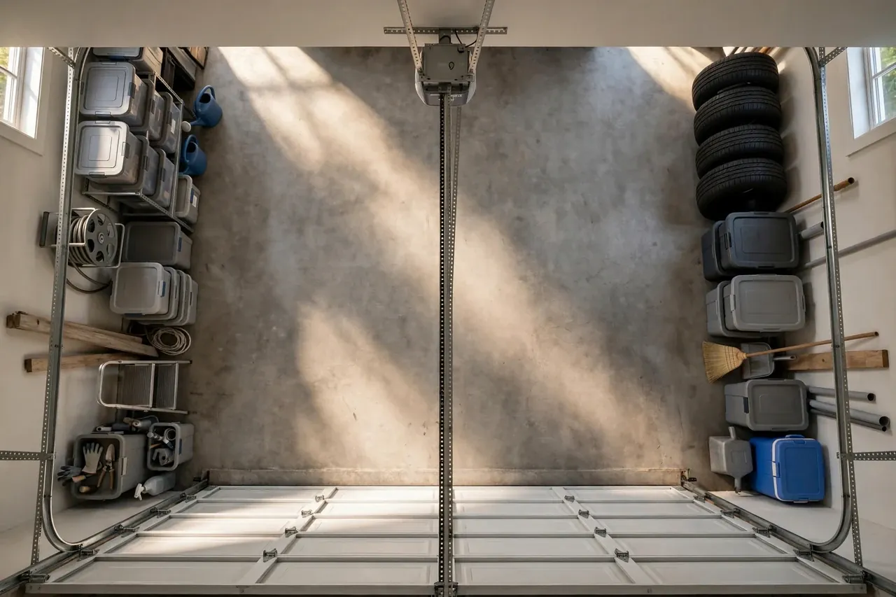

Your local team · Shepherds Crossing
Garage Doors in Shepherds Crossing, IL: Newer-Build Attached Garages
Shepherds Crossing is a single-family subdivision north of 29th Street, behind Zion-Benton High School, with homes built from 2004 to 2026. Attached 2 to 3 car, garage-forward garages predominate, the newest homes carry current doors and openers, and the earliest homes are entering a first replacement cycle. Milwaukee Garage Doors Inc handles repair, installation, springs and opener work here. Call (224) 842-7761. We are open 24 hours, every day.
Local knowledge
A Long Build Range, From 2004 to 2026
Shepherds Crossing stands north of 29th Street, behind Zion-Benton High School, in the western sector. Homes are single-family, built from 2004 to 2026, measuring from 1,575 to 2,564 square feet in older models and up to 3,920 square feet in the current range, on quarter-acre lots. The build range spans two descriptions found in the evidence, one calling the subdivision mid-2000s and an older one calling it mid-2010s, so this page uses the full 2004 to 2026 range and states no single build decade as settled. Attached 2 to 3 car, garage-forward garages predominate, the newest homes carry current doors and openers, and the earliest homes, from 2004 to 2010, are entering a first replacement cycle. A homeowners association website exists for the subdivision; no fee figure and no exterior-modification rule is stated on this page, since fee reports vary and any modification rules are unevidenced.
Services available in Shepherds Crossing
Garage Door Services for Shepherds Crossing Homes
Shepherds Crossing garage work follows the long build range: newest homes needing maintenance and sensor checks, earliest homes entering a first replacement cycle, and attached 2 to 3 car garages throughout.
01
Garage Door Installation & Replacement
Installation in Shepherds Crossing suits earliest homes entering a first replacement cycle and any home whose door has reached the end of its life. The opening is measured as built for the attached garage-forward layout.
View service 02Garage Door Repair
Repair work covers springs, cables, rollers, hinges, tracks and openers on attached 2 to 3 car garages. Door ages span the 2004 to 2026 build range, so each door is checked on its condition.
View service 03Garage Door Spring Replacement
Spring replacement is technician work, since springs carry high tension. Earliest homes from 2004 to 2010 are entering a first replacement cycle, and balance is checked once the work is done.
View service 04Garage Door Opener Repair & Installation
Opener repair and installation includes sensor alignment and auto-reverse testing. Newest homes carry current openers, while earliest homes may need opener repair or replacement judged by condition.
View service 05Garage Door Panel Replacement
Panel replacement can suit a door whose hardware is sound but one section is damaged. The section profile and size are measured first, since matching a newer-build door depends on what is already fitted.
View service 06Garage Door Off-Track, Cable & Roller Repair
Off-track, cable and roller repair in Shepherds Crossing covers attached 2 to 3 car doors that bind or drop unevenly. Track alignment is checked with the cables and rollers, since a wide double door shows uneven tension quickly.
View service 07Garage Door Maintenance & Tune-Up
Maintenance and tune-up visits cover lubrication, hardware checks, balance checks and safety sensor and auto-reverse tests. A regular check suits attached garages that see daily use across the whole build range.
View service 08Emergency Garage Door Repair
Emergency garage door repair in Shepherds Crossing covers street-facing attached doors across the 2004 to 2026 build range that are stuck open, stuck closed, off track, or unsafe to use. Call (224) 842-7761 and describe what the door is doing. We are open 24 hours, every day.
View serviceBuilt around the city
Garage Door Work Across a 2004 to 2026 Build Range
A build range spanning more than twenty years means Shepherds Crossing holds both new and aging doors. The notes below keep the two ends of the range separate, so neither is described by the other average.
Earliest homes, 2004 to 2010
The earliest homes are entering a first replacement cycle. Springs, openers and seals from those years are judged by condition, and replacement is recommended only where the door warrants it.
Newest homes
The newest homes carry current doors and openers. Sensor checks, auto-reverse testing and regular maintenance keep them running as fitted, with no replacement assumed.
Attached 2 to 3 car garages
Attached, garage-forward garages predominate. Work here is attached-garage work: doors, openers, sensors and seals on garages joined to the home.
Quarter-acre lots
Lots measure a quarter acre. Garage openings are measured individually, since lot size alone does not fix the door size or the headroom available.
Home sizes
Homes measure from 1,575 to 2,564 square feet in older models and up to 3,920 square feet in the current range. Larger homes can carry wider or taller garage layouts, measured per home.
Homeowners association
A homeowners association website exists for the subdivision. Homeowners who want to check association documents before choosing a door style should consult the association directly, since no rule is stated here.
Common local problems
Common Garage Door Problems in Shepherds Crossing
Earliest-home opener reaching replacement age
Sensor trouble on a daily-use attached door
Cold air through an attached garage seal
Double door dropping unevenly
Warning signs
Signs Your Shepherds Crossing Garage Door Needs Attention
The opener needs repeated presses
An opener that needs repeated presses can mean sensor trouble, a worn drive or a door growing heavy from a weakening spring. The opener, sensors and lifting system are checked together.
Reversals with a clear doorway
A Shepherds Crossing door that reverses for no visible reason often has a sensor lens blocked by a stored item or knocked out of alignment. Moving the obstruction and realigning the sensors usually ends the reversals.
Noise beside living space
Shepherds Crossing attached garages carry wear noise into the rooms beside them. Lubricating springs and hinges and checking rollers usually quiets the door.
A bang, then a heavy door
A bang from a Shepherds Crossing garage usually means a spring has broken, including on earliest homes now entering a first replacement cycle. The door turns heavy, so stop using it and call (224) 842-7761.
The door sits unevenly
A Shepherds Crossing door that hangs lower on one side can mean a cable stretching or a spring losing strength unevenly. Keep clear of it and have the cables, drums and springs inspected.
Area facts
Shepherds Crossing at a Glance
The facts below describe Shepherds Crossing as researched: its build range, its lot and home sizes, its garage pattern and its position behind the high school.
Build range
Homes were built from 2004 to 2026. The range spans a mid-2000s description and an older mid-2010s description, so no single build decade is stated as settled.
Home and lot sizes
Homes measure from 1,575 to 2,564 square feet in older models and up to 3,920 square feet in the current range, on quarter-acre lots.
Garage pattern
Attached 2 to 3 car, garage-forward garages predominate. Newest homes carry current doors and openers, and earliest homes are entering a first replacement cycle.
Position
The subdivision stands north of 29th Street, behind Zion-Benton High School, in the western sector, with young subdivision landscaping.
Homeowners Association at a Glance
A homeowners association website exists for Shepherds Crossing. No fee figure is stated here, since fee reports vary, and no modification rule is asserted.
Home types
Homes are single-family. Citywide cold-weather topics apply, with no subarea climate difference evidenced for the subdivision.
Shepherds Crossing service coverage
Garage Door Service Across Shepherds Crossing
Shepherds Crossing covers the single-family subdivision north of 29th Street, behind Zion-Benton High School, where homes span 2004 to 2026 and attached 2 to 3 car garages predominate. Garage work here follows the build range, from newest doors to earliest homes entering a first replacement cycle. Call (224) 842-7761 for repair, installation, springs, openers and maintenance. We are open 24 hours, every day.
Harbor RidgeWest ZionCypress ParkStonebridge Crossing
Milwaukee Garage Doors Inc2016 Horizon Ct, Zion, IL 60099
Common work
Garage Door Work Common in Shepherds Crossing
First-cycle replacement on earliest homes
Homes from 2004 to 2010 are entering a first replacement cycle. Doors and openers from those years are judged by condition, and replacements are measured to the opening as built.
Maintenance for the newest homes
The newest homes carry current doors and openers. Regular maintenance, sensor checks and auto-reverse testing keep them running as fitted.
Attached-garage opener and seal work
Attached garages make opener performance and seal condition practical topics. Opener checks and seal replacement are common work across the build range.
Notes from customers
What Customers Say
The crew was proficient and competent, and they made my garage seem better than before.
Premium components were used to rebuild my garage door for reasonably low running cost.
I had a thorough safety check on my garage door, the technician was very detailed.
Plan for the season
How Shepherds Crossing Seasons Affect Your Garage Door
Spring checks
Spring checks: once winter ends, Shepherds Crossing doors are checked for spring and cable wear, seal condition and sensor alignment across the build range.
Summer use
Summer use: steady daily use shows up as noise in Shepherds Crossing attached garages. Lubricating moving parts and checking rollers and hinges keeps the door running smoothly.
Fall preparation
Fall preparation: before cold arrives, Shepherds Crossing seals and thresholds are checked so each attached door meets the floor evenly through winter.
Winter cold
Winter cold: attached doors across the 2004 to 2026 range face stiff springs and hardened seals. A frozen door should never be forced with the opener.
Nearby service areas
Nearby Zion Areas
The Zion areas below sit near Shepherds Crossing in the western sector or share its subdivision character. Each page describes its own build years and garage pattern.
Before you hire
Questions to Ask a Garage Door Company in Shepherds Crossing
Is my earliest-home door entering a replacement cycle?
How do you verify the sensors and auto-reverse?
What permit questions belong to the Building Department?
Should I check association documents before choosing a door style?
What does a maintenance check cover across the build range?
Trust and compliance
Codes and Safety in Zion
Adopted codes in Zion
Zion has adopted the 2021 International Building Code and 2021 International Residential Code, effective January 1, 2025, with local amendments.
State licence position
Illinois does not issue a statewide licence covering garage-door work; the only general building-trade contractor licences issued statewide are for roofing and plumbing. Whether City of Zion contractor registration applies to garage-door contractors was not confirmed — ask the City of Zion Building Department.
Safety sensors and auto-reverse
Federal rules (16 CFR Part 1211, UL 325) require residential automatic garage door operators to have entrapment protection: an inherent reversal system plus a secondary entrapment protection device (such as photoelectric sensors or an edge sensor) or a constant-contact control. Test sensors and auto-reverse regularly.
Battery backup
No Illinois battery-backup mandate for garage door openers was found. Battery backup is an opener feature to discuss, not a requirement stated here.
Permits: ask the City first
Whether a City of Zion permit is required for garage-door work, and any fee, was not confirmed on a City source. Contact the City of Zion Building Department, 2828 Sheridan Road, (847) 746-4018, before work begins.
Springs and cables need care
Springs and cables carry high tension. Leave spring and cable work to a technician, and do not remove bottom brackets or fasteners holding spring and cable parts.
Older openings vary
Older garages can have openings that differ from current standard sizes. Measure the opening, headroom and side room before ordering a door so the replacement fits the opening as built.
When to stop using a door
If a spring breaks, a cable frays or the door drops unevenly, stop using the door and keep people clear of it. Call (224) 842-7761 and describe what the door is doing.
Homes were built from 2004 to 2026. The range spans a mid-2000s description and an older mid-2010s description, so this page uses the full range and states no single build decade as settled.
Attached 2 to 3 car, garage-forward garages predominate. The newest homes carry current doors and openers, and the earliest homes, from 2004 to 2010, are entering a first replacement cycle.
A homeowners association website exists for the subdivision. No fee figure is stated here, since fee reports vary, and no exterior-modification rule is asserted, since any such rules are unevidenced.
Whether a City of Zion permit is required for garage-door work, and any fee, was not confirmed on a City source. Contact the City of Zion Building Department, 2828 Sheridan Road, (847) 746-4018, before work begins.
Call (224) 842-7761 and describe what the door is doing. The business is at 2016 Horizon Ct, Zion, IL 60099, and is open 24 hours, every day.
Your next step is waiting
Need Garage Door Help in Shepherds Crossing?
If a Shepherds Crossing garage door is stuck, noisy, uneven or reversing without cause, call (224) 842-7761 and describe what the door is doing. Newest and earliest homes in the build range are both covered. We are open 24 hours, every day.
Start with the basics
Call Milwaukee Garage Doors Inc
Reach Milwaukee Garage Doors Inc at (224) 842-7761 for garage door repair, installation, spring replacement, opener work, panel replacement, off-track repair and maintenance in Zion. We are open 24 hours, every day. Tell us what the door is doing and whether the garage is detached or attached.